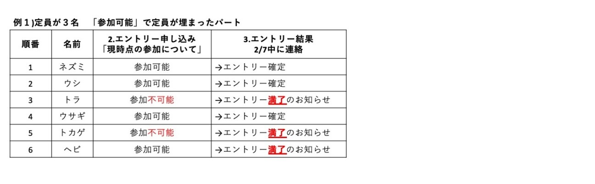
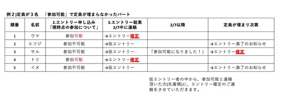

エントリーフォーム 管打楽器 弦楽器 練習フォーム 指定された時刻になりましたら、各フォームが開かれます。お間違えのないよう、ご注意ください。 募集状況 募集情報 参加者は、各大学の行動指針（県外移動や課外活動など）に基づいて行動してください。 今回は、感染対策と開催期間の短縮により、途中抜け/途中参加は原則禁止とさせていただきます。ご了承ください。 今回のエントリーでは、現時点での参加の可否に関わらずエントリーが可能です。 ※エントリーフォームに『現時点で参加可』『現時点で参加は難しいが状況が変われば可』の項目を用意しております。 今回はエントリー後、すぐに確定とはなりません。 エントリー確定後に欠員が出た場合もエントリー時の先着順で連絡いたします。 エントリー日時 管打楽器 1月30日（土）23:00~ 弦楽器 1月31日（日）23:00~ 締め切り 2月6日（土）23:59（予定） ※締め切りは予告なく変更する場合がございます。ご了承ください。 エントリー結果 管打楽器・弦楽器ともに２月７日（日）にエントリーの結果をご連絡いたします。 中止条件について 以下の場合は、開催を中止させていただきます。 全国のいずれかの県または地方に緊急事態宣言が出た場合 エントリー数が十分に集まらず、開催できないと判断した場合 県外移動の自粛要請が出た場合 政府もしくは自治体からイベント中止の要請が出た場合 ※そのほかの場合でも急遽中止にする場合がございます。ホームページ、Twitter、公式ラインなどで最新の情報をお伝えしていきますので、参加を検討されている方は、随時ご確認をよろしくお願いいたします。 目次 エントリーの流れ 1. 準備 2. エントリー申込 3. エントリー結果 4. 参加費の振込 5. 例 お問い合わせ エントリーの流れ 1. 準備 参加費のご案内とパート紹介を必ずご確認のうえ、上記フォームよりエントリーしてください。 テストフォームを開設しております。項目は実際のエントリーフォームと同じです。事前の動作確認にご利用ください。エントリーフォームの最後、送信ボタンの前に「私はロボットではありません」という確認項目があります。✓を入れ認証が完了してから送信してください。 2. エントリー申込 エントリーが確定した参加者へ、2通のメールをお送りします。 申し込み完了のお知らせメール(エントリー内容のコピーを自動送信) LINEオープンチャットへの招待メール メール内容をご確認のうえ、まず招待メールからLINEオープンチャットに参加してください。 詳細は招待メールをご覧ください。 3. エントリー結果 2月7日中に、以下の連絡をいたします。 •エントリー時に「現時点で参加可能」と回答した方 先着順に「エントリー確定」のメールをお送りさせていただきます。 「現時点で参加可能」と回答した方が、定員より多い場合、定員を超えた方には、「エントリー満了のお知らせ」のメールをお送りさせていただきます。 •エントリー時に「現時点で参加は難しいが状況が変われば可」と回答した方 一律で「仮エントリー」の状態となります。 今後参加可能になった場合、速やかにエントリー係 野口 までご連絡ください。定員に空きがあれば、エントリー確定となります。 定員が埋まった時点で、「仮エントリー」状態の方には、「エントリー満了のお知らせ」のメールを送りいたします。 ※確定者の中からキャンセルが発生した場合、「エントリー満了のお知らせ」を受け取った方の中から、エントリー申し込み時の先着順に追加募集のご連絡をさせていただくことがございます。 4. 参加費の振込 全パートのエントリー確定後、１通のメールをお送りします。指定した口座に、以下の金額を期間内にお振り込みください。 •振り込みのご案内メール 例年と異なる部分が多いため、ご確認をよろしくお願いいたします。 今回は感染予防のため、練習受付時の支払いを行いません。振込額は参加費とオプション費を合計した金額をお知らせいたします。 振込額 ¥90,000+ オプション費（詳細）※予定ですので、変更する場合がございます。変更した場合は、随時、詳細をご案内させていただきます。 振込先 振り込みのご案内メールに記載 期間 2021年3月1日（月）振込期限を過ぎると追徴金が発生しますのでご注意ください。※1月19日以降にエントリーいただいた方の振込期限は個別にご連絡いたします。 振込が完了しましたら、 （会計 長岡真）まで次の5点をご連絡ください。 大学名 学年 お名前（よみがな） 振込完了日 送金人氏名（お名前と同じ場合でも省略せずご記入ください） 5. 例   お問い合わせ 第32回西オケ エントリー係 野口颯真 エントリーに関するご質問、エントリー後の内容変更などあれば遠慮なくお問い合わせください。